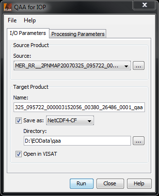
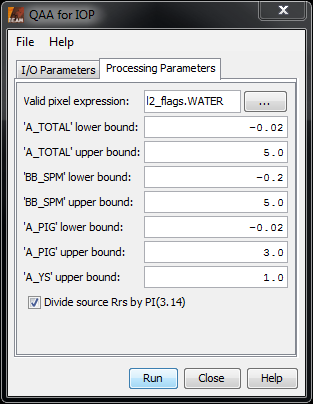

| QAA Processor Description |
|
The QAA processor can be invoked from the VISAT tools menu by selecting
the QAA for IOP (MERIS)... command. On the command line the QAA processor is
available by means of the Graph Processing Tool gpt which is located in the BEAM bin
directory. Typing gpt Meris.QaaIOP -h displays further information.
Selecting the QAA for IOP (MERIS)... command from the VISAT tools menu pops up the following dialog:

Source product: Here the source productis specified. The combo box presents a list of all products open in VISAT. The user may select one of these or, by clicking on the button next to the combo box, choose a product from the file system.
Name: Used to specify the name of the target product.
Save as: Used to specify whether the target product should be saved to the file system. The combo box presents a list of available file formats. The text field or the button next to it allow to specify a target directory.
Open in VISAT: Used to specify whether the target product should be opened in VISAT. When the target product is not saved, it is opened in VISAT automatically.

Valid pixel expression: An expression defining pixels considered for processing. By default the expression is set to 'l2_flags.WATER'.
'A_TOTAL' lower bound: The lower bound of the valid value range. If the computed value is below this boundary (default: -0.02) the flag 'a_total_oob' is set and the "No-Data" value is written to the target product instead.
'A_TOTAL' upper bound: The upper bound of the valid value range. If the computed value is above this boundary (default: 5.0) the flag 'a_total_oob' is set and the "No-Data" value is written to the target product instead.
'BB_SPM' lower bound: The lower bound of the valid value range. If the computed value is below this boundary (default: -0.2) the flag 'bb_spm_oob' is set and the "No-Data" value is written to the target product instead.
'BB_SPM' upper bound: The upper bound of the valid value range. If the computed value is above this boundary (default: 5.0) the flag 'bb_spm_oob' is set and the "No-Data" value is written to the target product instead.
'A_PIG' lower bound The lower bound of the valid value range. If the computed value is below this boundary (default: -0.02) the flag 'a_pig_oob' is set and the "No-Data" value is written to the target product instead.
'A_PIG' upper bound: The upper bound of the valid value range. If the computed value is above this boundary (default: 3.0) the flag 'a_pig_oob' is set and the "No-Data" value is written to the target product instead.
'A_YS' upper bound: The upper bound (default: 1.0) of the valid value range. The lower bound is always 0. If the computed value is above or below one of these boundaries the flag 'a_ys_oob' is set and the "No-Data" value is written to the target product instead. If the value is below zero additionally the flag 'negative_a_ys' is set.
Divide source Rrs by PI(3.14): If selected the source remote sensing reflectances are divided by PI.
Run Creates the target product. The QAA processing is actually deferred until its band data are accessed, either by writing the product to a file or by opening its bands in VISAT. When the Save as option is checked, the QAA processing is triggered automatically.
Close Closes the dialog.
Help Opens this Help window.
File The entries found in this menu allow to save the current processing parameters to a file and to open a saved parameter set from a file.
Help Has entries to open the About dialog and to open the Help window.